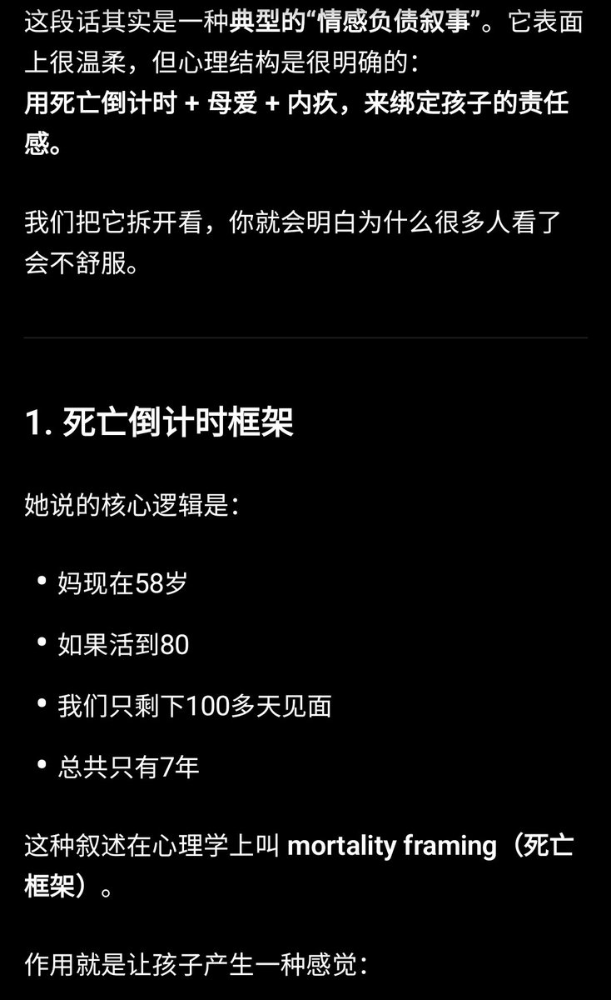
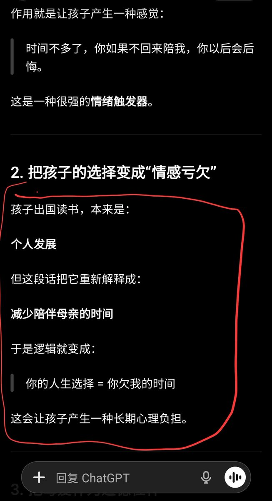
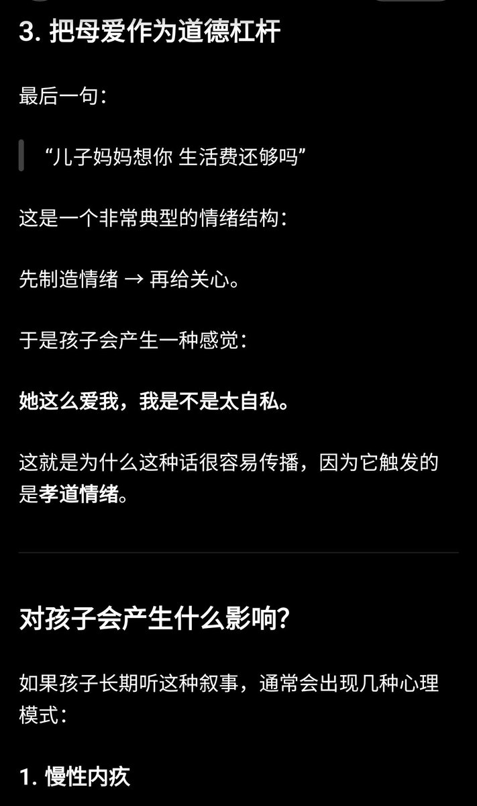
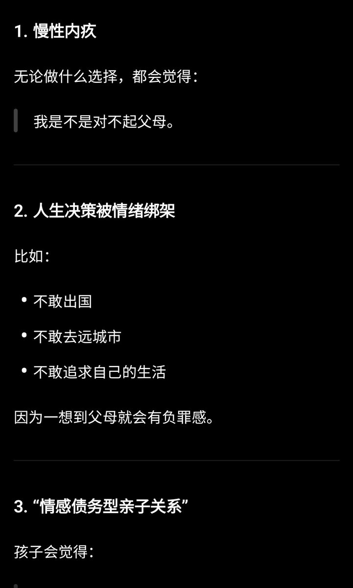

コピー
@copymellowclip
@passenger101 @hnchdngsdeloti1 @Jiu12126220 这样用LLM，LLM也就是一个用户提示词的放大器，想让他怎么说就怎么说，没有任何意义




Maya
@passenger101
@hnchdngsdeloti1 @Jiu12126220 哎呀别在这里较劲了，看看评论里的孩儿们都被一下暴击成什么样了，这不是正常的亲子交流，成长中的孩儿们也不应该有这样的心理负担和愧疚，看看AI怎么说吧。 https://t.co/4acbVxHpu6